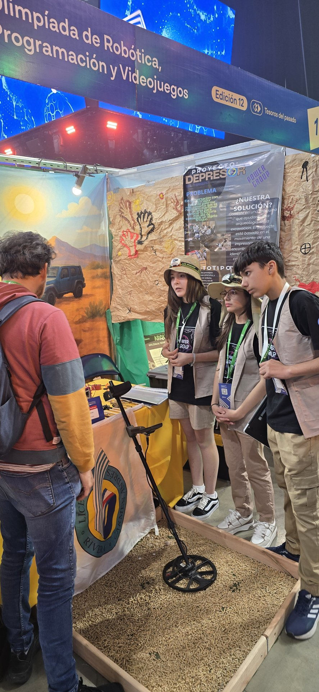
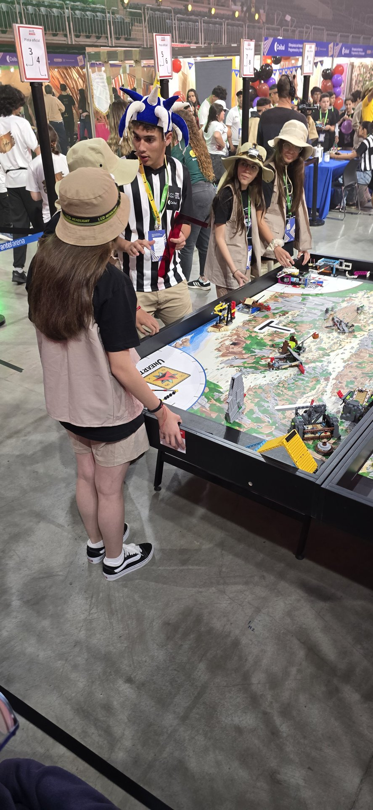
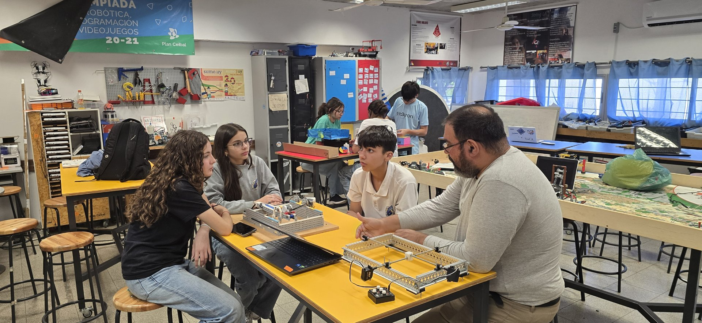
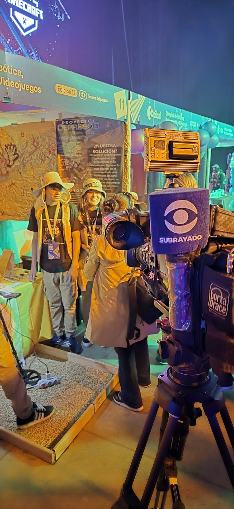
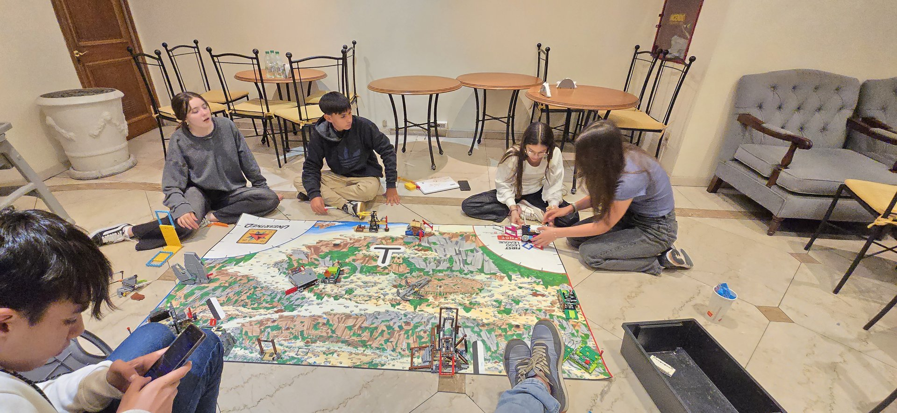
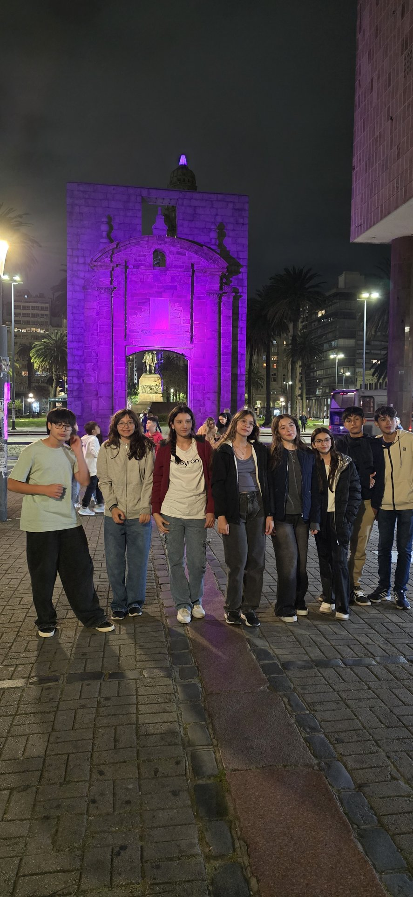
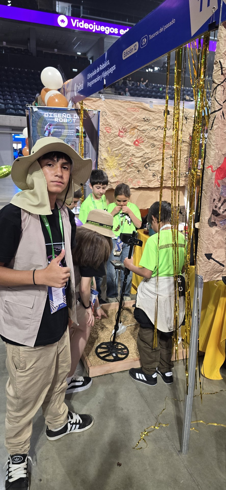

POWER GROUP / TOOLS2:30↗PROBÁ. MARCÁ. SEGUÍ MEJORANDO.
ACTUAL · HERRAMIENTA DISPONIBLE
Power Group Scorer
Calculadora de puntajes de entrenamiento con cronómetro de 2:30, avisos sonoros y guardado de partida en tu navegador.
Abrir calculadora ↗ROBÓTICA · RIVERA, URUGUAY
Somos Power Group. Construimos robots, exploramos soluciones y aprendemos a llegar más lejos, juntos.
 EN MODO PRUEBA ●
EN MODO PRUEBA ●01 / NUESTRA FORMA DE HACER
La robótica nos reúne. Lo que aprendemos juntos nos hace crecer.
En Power Group compartimos construcción, programación y proyectos. Cada prueba es una oportunidad para escuchar otra idea, encontrar un error y buscar una solución en equipo.
Una idea se entiende mejor cuando la ponemos en movimiento.
El conocimiento crece cuando podemos explicarlo y ayudar a alguien más.
02 / DEL BOCETO A LA PRUEBA
Calculadora de puntajes de entrenamiento con cronómetro de 2:30, avisos sonoros y guardado de partida en tu navegador.
Abrir calculadora ↗Nuestro proyecto anterior, también llamado Depresor de terreno, explora cómo la robótica puede ayudar a excavar preservando los objetos y la información que los rodea.
Investigamos cómo una excavación controlada y un registro de ubicación y profundidad pueden ayudar a conservar el contexto de los hallazgos.
El panel del proyecto reúne las imágenes del prototipo, las etapas de funcionamiento propuestas y la metodología prevista para evaluarlo.
Nuestro archivo irá creciendo con los proyectos anteriores y los nuevos desafíos.
El lugar desde el que compartimos nuestra experiencia como equipo de robótica.
UY / RIVERAUn espacio para reunir al equipo, explorar herramientas y dar forma a los proyectos.
Próximamente: recorrido fotográfico por nuestro lugar de trabajo.
04 / CUANDO ESTAMOS JUNTOS
De la primera idea al próximo intento.
Escuchamos propuestas y hacemos preguntas.
Las piezas, el código y las ideas empiezan a conectarse.
Observamos lo que funciona y lo que podemos mejorar.
Contamos lo aprendido y celebramos los avances.
NUESTRO RECORRIDO / TEMPORADA 2025
Compartimos el trabajo de 2025 en FIRST LEGO League: nuestra investigación en arqueología, el robot y los valores que pusimos en práctica. Conservamos esta experiencia como referencia mientras documentamos la nueva temporada.
En 2025 investigamos cómo apoyar una excavación arqueológica sin perder el contexto de los hallazgos. Las conversaciones con Eduardo Palermo acercaron al equipo al problema y dieron lugar al Depresor: un prototipo de mecanismo para explorar desplazamientos controlados. Es una propuesta en desarrollo, sin resultados de validación en una excavación real.

En 2025 construimos, programamos y probamos el robot para las misiones de UNEARTHED. Trabajamos con accesorios y recorridos, practicamos juntos y llevamos el robot a la Olimpíada de Ceibal en el Antel Arena. Las pruebas y los ajustes formaron parte del aprendizaje.

Descubrimiento, Innovación, Impacto, Inclusión, Trabajo en equipo y Diversión. Profesionalismo Cordial y Coopertición atraviesan nuestra manera de vivirlos.
 VALOR 01
VALOR 01Exploramos ideas y desarrollamos nuevas habilidades.
 VALOR 02
VALOR 02Buscamos soluciones con creatividad y persistencia.

 VALOR 03
VALOR 03Usamos lo aprendido para aportar a nuestra comunidad.

 VALOR 04
VALOR 04Escuchamos, respetamos y valoramos cada aporte.
 VALOR 05
VALOR 05Combinamos nuestras habilidades para avanzar juntos.

 VALOR 06
VALOR 06Disfrutamos el proceso y celebramos lo que hacemos.

MÁS ALLÁ DEL RESULTADO
Buscamos hacer un trabajo de calidad, reconocer el esfuerzo de los demás y tratarnos con respeto, incluso cuando algo no sale como esperábamos.
Competir también puede ser colaborar: compartimos conocimientos y ayudamos a otros equipos para que todos podamos aprender.

Iconos de los seis valores: FIRST. Los símbolos de navegación son ilustraciones de esta web. FIRST®, Gracious Professionalism® y Coopertition® son marcas de FIRST.
BITÁCORA / EXPERIENCIAS COMPARTIDAS
Conversamos con Eduardo Palermo y Pablo Macedo para acercarnos al trabajo de los historiadores y enriquecer nuestras preguntas.
Una experiencia que forma parte de los recuerdos del equipo, junto a los encuentros con otros estudiantes.
Presentamos nuestro proyecto a grupos escolares y practicamos cómo explicar nuestras ideas a otras personas.
Participamos en las Olimpiadas de Robótica y Programación, con la experiencia de conocer el Antel Arena como equipo.
Las familias, las referentes pares y quienes nos acompañan en el Ceilab también son parte del camino: reuniones, apoyo desde casa y muchas horas compartidas.
VIAJES / APRENDER TAMBIÉN ES SALIR
El robot viaja con nosotros. También viajan las ideas, los nervios, las banderas y las ganas de compartir lo que hacemos.
Las Olimpiadas nos llevaron a Montevideo y al Antel Arena. En el libro del equipo guardamos recuerdos de esa primera experiencia en el lugar, de los días de actividad y de los momentos compartidos después de la jornada.
Además del robot y las presentaciones, el viaje también tuvo espacio para acompañarnos, conversar y compartir una comida después del primer día. Esos momentos forman parte de nuestra historia como equipo.
El álbum Uruguay reúne nuestra experiencia en Montevideo, el trabajo en Rivera, encuentros, entrevistas y preparativos del equipo.
ÁLBUM / URUGUAY
55 recuerdos de la Olimpíada en Montevideo, el Ceilab en Rivera y las actividades que nos hacen crecer como equipo. Tocá una foto para ampliarla.

Llevamos nuestras camisetas, las banderas de Uruguay y los proyectos de Power Group a México. El stand fue nuestro punto de encuentro para mostrar el trabajo del equipo.
Entre actividades del evento y recorridos compartidos, también hubo tiempo para conocer a otras personas, divertirnos y guardar recuerdos con quienes nos acompañaron.
Explorá las 28 fotos del álbum y conocé algunos de los momentos del viaje.
ÁLBUM DEL VIAJE
El stand, los encuentros y los momentos que compartimos fuera de la pista. Tocá una foto para ampliarla y recorrer la colección.
BITÁCORA / NUESTRO ROBOT
El libro del robot comienza con la construcción de nuestro primer modelo EV3.
Un primer diseño con SPIKE abre una nueva etapa de construcción y programación.
Dos motores pequeños, dos grandes, dos sensores de luz y un giroscopio integrado, según el libro del equipo.
Nuevas versiones del robot y sus mecanismos, documentadas junto a nuestras decisiones de programación.
Agrupar misiones cercanas, reutilizar un mismo accesorio y aprovechar los desplazamientos: el libro explica cómo buscamos recorridos más eficientes.
Próximamente: imágenes de cada versión y detalles de sus mejoras.
05 / EL TALENTO DEL EQUIPO
Un espacio para que cada integrante muestre lo que sabe hacer, lo que está aprendiendo y sus propias creaciones.
Tocá un nombre en la foto para conocer a cada integrante.
De una idea a una secuencia de instrucciones. Fede aporta programación y construcción de accesorios; el libro del robot permite compartir las decisiones y las pruebas del equipo.
Programar, construir, documentar y comunicar: cada aporte ayuda a que el proyecto avance. Seguiremos sumando creaciones y ejemplos del equipo.
06 / ASÍ SE VE POWER GROUP
LA PRÓXIMA IDEA PUEDE EMPEZAR CON UNA CONVERSACIÓN